Chapter 4 Data visualization
Goals for today’s class:
- More on manipulating variables
if_else()
- Single variables using
ggplot- Categorical (nominal/ordinal)
- bar chart –
geom_bar()
- bar chart –
- Continuous (interval/ratio)
- histogram –
geom_histogram()
- histogram –
- Categorical (nominal/ordinal)
- Bivariate relationships
- crosstabs –
tab_xtab()fromsjPlot - visualizing crosstabs with stacked bar chart
geom_bar() - box plot
geom_boxplot() - scatter plot
geom_point()
- crosstabs –
- More on manipulating variables
4.2 Load data
We will be using two data sets today, one from last week—Canada’s votes at the UNGA—and the other is an experimental data.
4.3 Recap and some additional basics
R scripts
R scripts should be complete in itself. Before submitting your assignments, start a new session, clear your workspace, select the entire code (i.e. “Select All”) and run everything. You should not get any errors.
Syntax for functions: <functionname>(<argument(s)>)
Functions are a fixed series of actions done to an object. The syntax will always begin with the function name, followed by ().
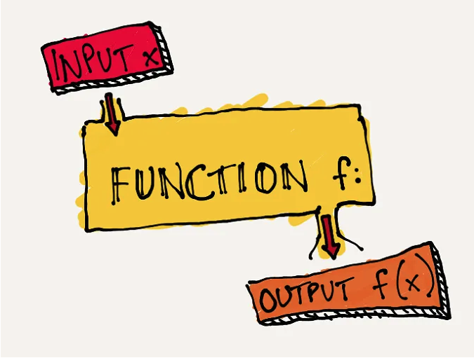
(Image credit: https://medium.com/swlh/7-programming-concepts-functions-6072d7c50278)
In some cases, functions may not have arguments, for example, n(). The following is the documentation for n(),
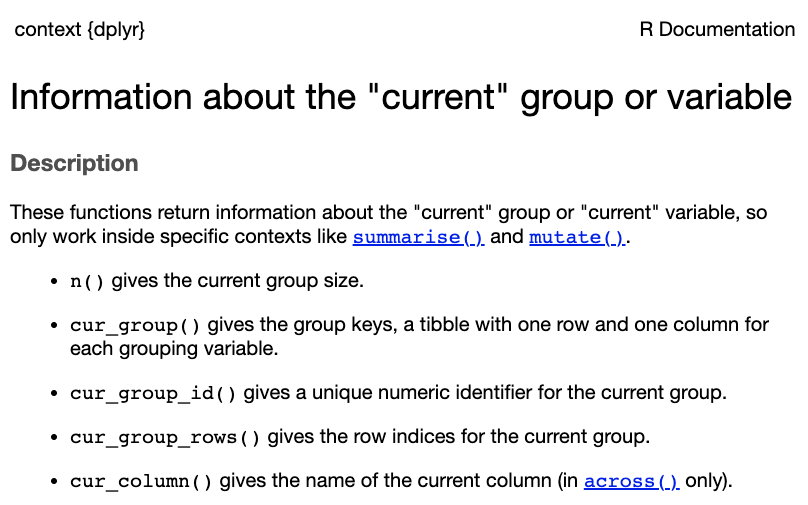
Arguments are function-specific
Last week we learnt the following tidyverse functions
- filter()
- group_by()
- mutate()
- reframe()
- select()
- arrange()
filter() takes expressions that produce a logical value, i.e. conditional statements
## rcid country country_code year vote session importantvote date
## 1 2497 Canada CA 1983 yes 38 1 1983-11-06
## 2 2510 Canada CA 1983 no 38 1 1983-12-06
## 3 2526 Canada CA 1983 no 38 1 1983-12-06
## 4 2526 Canada CA 1983 no 38 1 1983-12-06
## 5 2563 Canada CA 1983 yes 38 1 1983-12-07
## 6 2610 Canada CA 1983 yes 38 1 1983-12-03
## 7 2610 Canada CA 1983 yes 38 1 1983-12-03
## unres amend para short
## 1 R/38/29 0 0 AFGHANISTAN
## 2 R/38/39G 0 0 SOUTH AFRICA, MILITARY COLLABORATION
## 3 R/38/180E 0 0 ISRAEL, ISOLATION
## 4 R/38/180E 0 0 ISRAEL, ISOLATION
## 5 R/38/187C 0 0 CHEMICAL, BIOLOGICAL WEAPONS
## 6 R/38/101 0 0 HUMAN RIGHTS, EL SALVADOR
## 7 R/38/101 0 0 HUMAN RIGHTS, EL SALVADOR
## descr
## 1 TO DEMAND THE WITHDRAWAL OF FOREIGN FORCES FROM AFGHANISTAN, TO DECLARE ONCE AGAIN THE RIGHTS OF THE PEOPLE OF AFGHANISTAN TO POLITICAL INDEPENDENCE, AND TO EXTEND A PLEA FOR RELIEF ASSISTANCE FOR AFGHAN REFUGEES.
## 2 TO RECOMMEND THAT THE SECURITY COUNCIL TAKE STEPS TO MAKE CERTAIN THAT ALL STATES TERMINATE MILITARY AND NUCLEAR COOPERATION WITH THE REGIME OF SOUTH AFRICA AND TO DENOUNCE THOSE STATES THAT CONTINUE SUCH COOPERATION.
## 3 TO ORDER ALL STATES TO TERMINATE MILITARY AND ECONOMIC SUPPORT ISRAEL.
## 4 TO ORDER ALL STATES TO TERMINATE MILITARY AND ECONOMIC SUPPORT ISRAEL.
## 5 TO NOTE THE REPORT OF THE SECRETARY-GENERAL ON THE IMPLEMENTATION OF RESOLUTION 37/98D DEALING WITH CHEMICAL AND BACTERIOLOGICAL WEAPONS.
## 6 TO EXPRESS CONCERN THAT INFRINGEMENTS OF HUMAN RIGHTS ARE CONTINUING IN EL SALVADOR, TO SUGGEST THAT NECESSARY ECONOMIC AND SOCIAL REFORMS BE IMPLEMENTED TO RESOLVE THE BASIC INTERNAL CONFLICT THERE, TO URGE THE GOVERNMENT TO PROCEED TOWARD A C
## 7 TO EXPRESS CONCERN THAT INFRINGEMENTS OF HUMAN RIGHTS ARE CONTINUING IN EL SALVADOR, TO SUGGEST THAT NECESSARY ECONOMIC AND SOCIAL REFORMS BE IMPLEMENTED TO RESOLVE THE BASIC INTERNAL CONFLICT THERE, TO URGE THE GOVERNMENT TO PROCEED TOWARD A C
## short_name issue
## 1 hr Human rights
## 2 nu Nuclear weapons and nuclear material
## 3 me Palestinian conflict
## 4 ec Economic development
## 5 di Arms control and disarmament
## 6 hr Human rights
## 7 ec Economic developmentgroup_by() take either variables or conditional statements
mutate() and reframe() take variable assignment arguments. For mutate(), the original data frame is retained and new variables/columns are added to the data frame. For reframe() the data frame is reduced to the size of the new object.
Missing values
If a variable contains missing (NA) values, summary statistics such as mean() and sum() will return NA unless the argument na.rm is specified TRUE, meaning missing values should be removed.
## imptvote
## 1 448## imptvote
## 1 NATo see if a variable contains missing values, you can use a combination of table and is.na(). is.na() returns a same-length vector of TRUE/FALSE (TRUE if the value is missing and FALSE if the value is present).
##
## FALSE TRUE
## 5307 425This tells us that the variable has 425 missing values.
select() and arrange() take variable names.
Argument names
In many of the examples here, I omit the name of the argument. This is fine when we know the order of the arguments or when the function requires only one argument. For example, the following codes are equivalent.
But that’s only because I stated them in the right sequence. See the documentation,
Specifying the argument is a safe way to work with unfamiliar functions because it is fine if you get the sequence wrong.
This will give you an error.
if_else() function
Let’s say we want to create a new binary variable that denotes two separate periods, during and before/after the cold war.
if_else takes a conditional statement as its first argument, followed by the replacement value if TRUE as the second argument, and replacement value if FALSE as the third argument. (Do you remember what a conditional statement is? See Section ??)
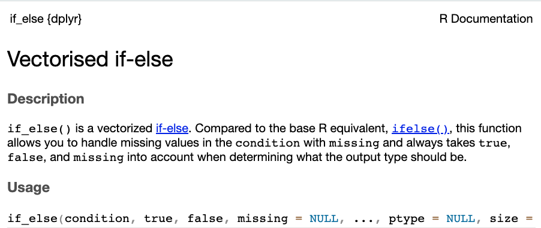
df2 <- df |>
mutate(support = if_else(vote=="yes", # logical test
1, # TRUE/yes output
0)) # FALSE/no outputFind the new variable at the extreme right of the data set.
Quick exercise: Explain what each step of the following code executes and what variable x represents in the resultant output.
df |>
group_by(issue, importantvote) |>
reframe(n = n()) |>
group_by(issue) |>
mutate(x = round(n/sum(n), 2))## # A tibble: 18 × 4
## # Groups: issue [6]
## issue importantvote n x
## <chr> <int> <int> <dbl>
## 1 Arms control and disarmament 0 930 0.85
## 2 Arms control and disarmament 1 48 0.04
## 3 Arms control and disarmament NA 110 0.1
## 4 Colonialism 0 902 0.94
## 5 Colonialism 1 33 0.03
## 6 Colonialism NA 21 0.02
## 7 Economic development 0 637 0.84
## 8 Economic development 1 67 0.09
## 9 Economic development NA 58 0.08
## 10 Human rights 0 785 0.77
## 11 Human rights 1 170 0.17
## 12 Human rights NA 58 0.06
## 13 Nuclear weapons and nuclear material 0 681 0.8
## 14 Nuclear weapons and nuclear material 1 43 0.05
## 15 Nuclear weapons and nuclear material NA 129 0.15
## 16 Palestinian conflict 0 924 0.87
## 17 Palestinian conflict 1 87 0.08
## 18 Palestinian conflict NA 49 0.054.4 Data visualization
ggplot()
The ggplot2 package contains functions tailored to making presentable and informative graphs. It works through piecing together separate pieces of graphical components joined by a + sign, beginning with the empty plane specified using the function ggplot().
 To begin plotting on
To begin plotting on ggplot(), you need to specify two components, 1. data, 2. x-axis and/or y-axis.
The x- and y- axes are specified under aes() which refers to aesthetic mappings. Aesthetic mappings describe how variables in the data are mapped to visual properties.
Integer/numeric (class) on x-axis
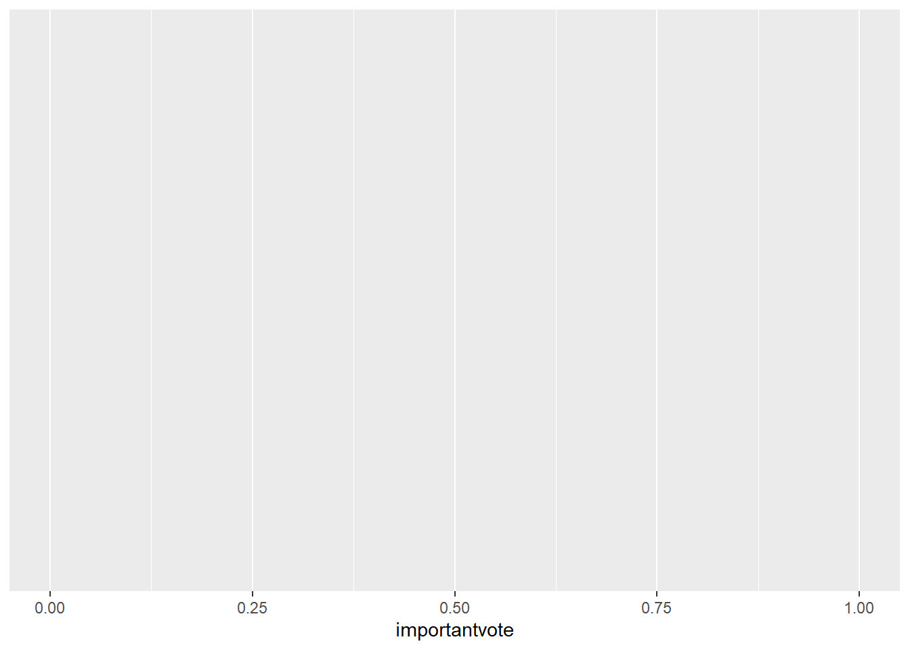
Character (class) on the y-axis
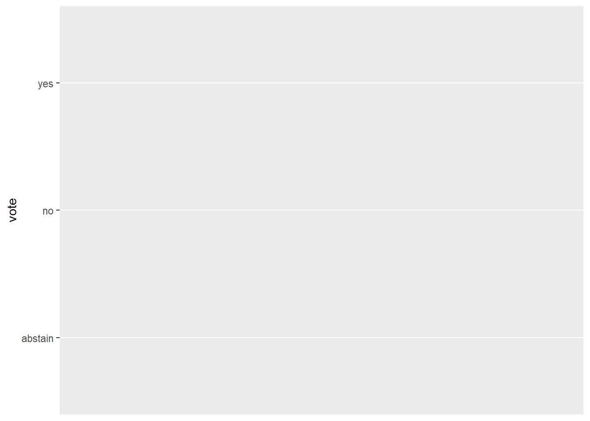
4.5 Plots for categorical variables
Univariate: nominal/ordinal
Create frequency bar charts by adding geom_bar() to ggplot()
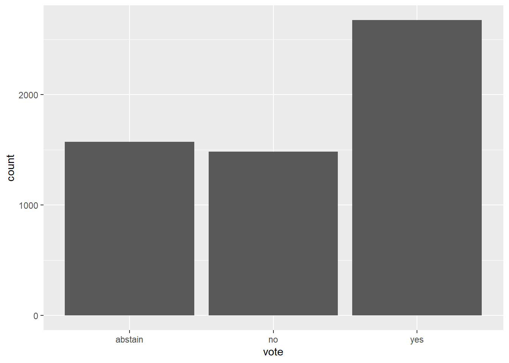
Note: Do not confuse geom_bar with another type of bar chart, geom_col(). geom_bar() summarizes the data into groups while geom_col() plots the values in the data.
data <- data.frame(vote = c("abstain","no","yes"),
count = c(5,15,20))
ggplot(data, aes(x=vote,y=count)) +
geom_col()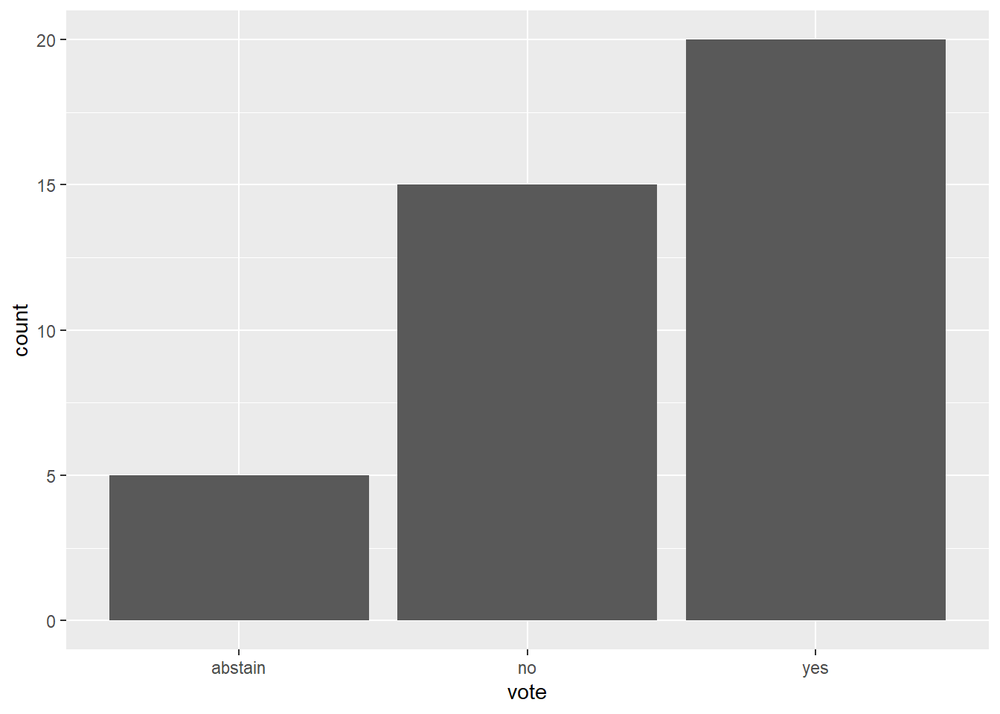
For clearer presentation of single variables, categories with long names can be plotted on the y-axis instead of x-axis.
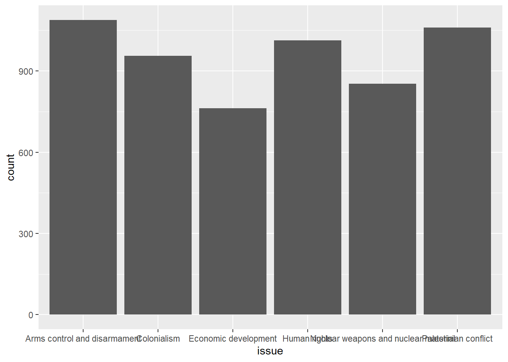

Bivariate: two nominal/ordinal variables
- Crosstabs and chi-square test – tab_xtab()
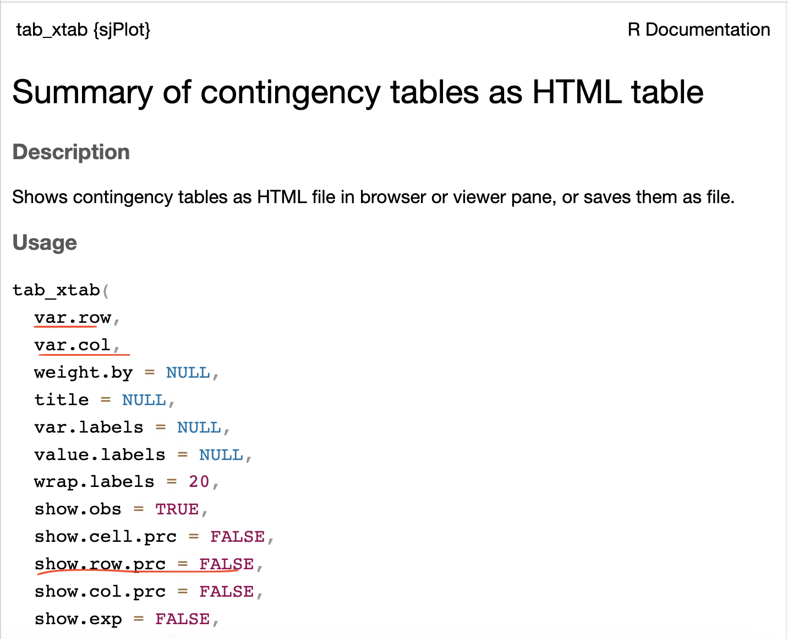
Let’s cross-tabulate Canada’s votes on the six issues listed in the dataset. Independent variable in columns and dependent variables in rows. (Note: tab_xtab is not a tidyverse function. Hence, variable names should be preceded by object name of data frame and $)
| vote | issue | Total | |||||
|---|---|---|---|---|---|---|---|
|
Arms control and disarmament |
Colonialism | Economic development | Human rights |
Nuclear weapons and nuclear material |
Palestinian conflict | ||
| abstain |
263 24.2 % |
311 32.5 % |
228 29.9 % |
278 27.4 % |
205 24 % |
289 27.3 % |
1574 27.5 % |
| no |
231 21.2 % |
240 25.1 % |
137 18 % |
338 33.4 % |
236 27.7 % |
301 28.4 % |
1483 25.9 % |
| yes |
594 54.6 % |
405 42.4 % |
397 52.1 % |
397 39.2 % |
412 48.3 % |
470 44.3 % |
2675 46.7 % |
| Total |
1088 100 % |
956 100 % |
762 100 % |
1013 100 % |
853 100 % |
1060 100 % |
5732 100 % |
χ2=108.983 · df=10 · Cramer’s V=0.098 · p=0.000 |
- Visualizing the contingency table with stacked bar plot
What we want:
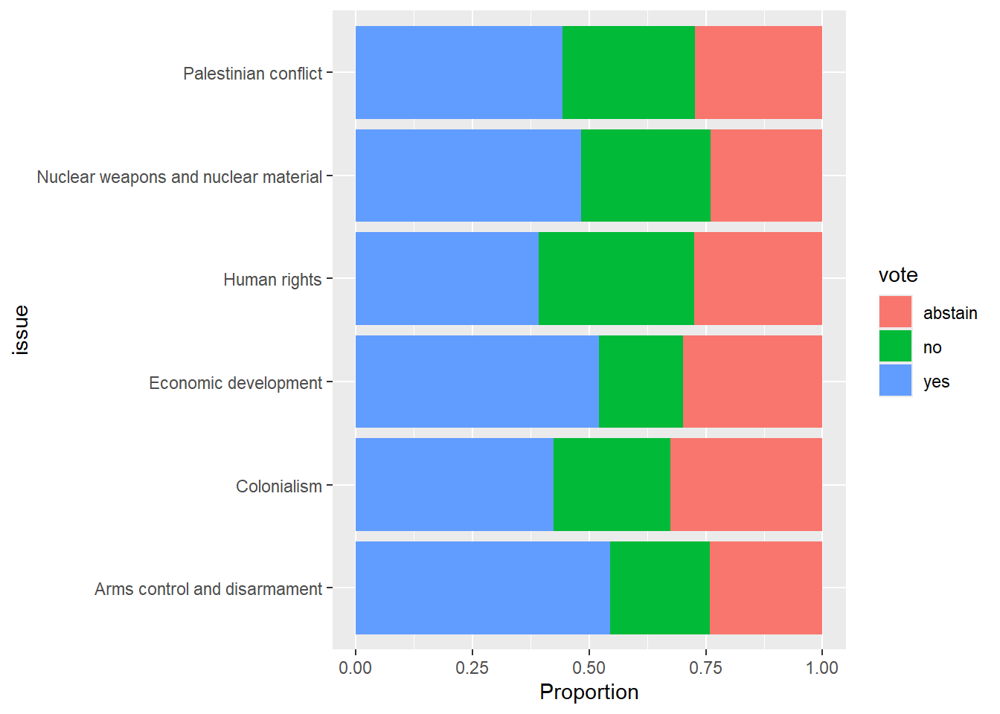
First step: geom_bar()
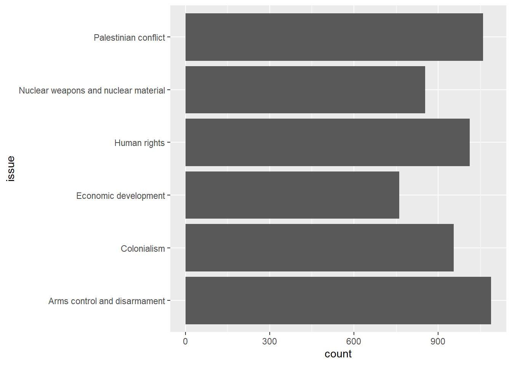
Second step: argument fill
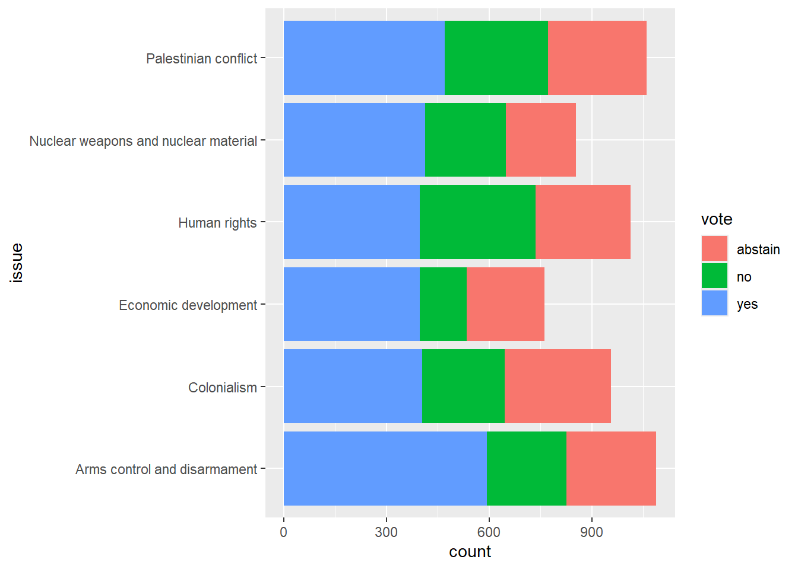
Third step: argument position
df2 |>
ggplot(aes(y=issue,fill=vote)) +
geom_bar(position="fill") + # position="fill" sets each bar to the same height of 1
xlab("Proportion")
4.6 Plots for interval variables
Survey experiment data
Let us switch data sets here because the UN data set does not contain suitable interval/ratio variables for us to play with.
The data used in the following section is sourced from the replication data of the paper,
Lee, Nathan. “Do Policy Makers Listen to Experts? Evidence from a National Survey of Local and State Policy Makers.” American Political Science Review 116, no. 2 (2022): 677–88. https://doi.org/10.1017/S0003055421000800.
Replication data file: https://dataverse.harvard.edu/dataset.xhtml?persistentId=doi:10.7910/DVN/S2SNOT
Data comes from a survey fielded to policymakers (elected municipal officials, elected county officials, state legislators, state legislative staffers)
We use a simplified version of the data:
| variable | desc. |
|---|---|
| issue | Needle exchange (1 out of 3 issues discussed in the paper). |
| treated | 1 if treated, 0 if control. Treatment: Experts from several universities have examined this issue and concluded that needle exchanges do not increase drug use. |
| preference | Dependent variable 1: policy preferences (scaled 0-1). Do you support needle exchange? (Strongly support – Strongly oppose) |
| accuracy | Dependent variable 2: belief accuracy (scaled 0-1). If you were to guess, what percentage of public health experts who conduct research related to needle exchanges believe these programs do NOT increase drug use? (Less than 20%, 20 - 40%, 40 - 60%, 60 - 80%, More than 80%) |
| republican | Party affiliation of the policymaker (1 if Republican, 0 if Democrat) |
| age | Age of the policymaker |
| gov_exp | Over your career, how many years have you worked in government? |
Take a look at the data.